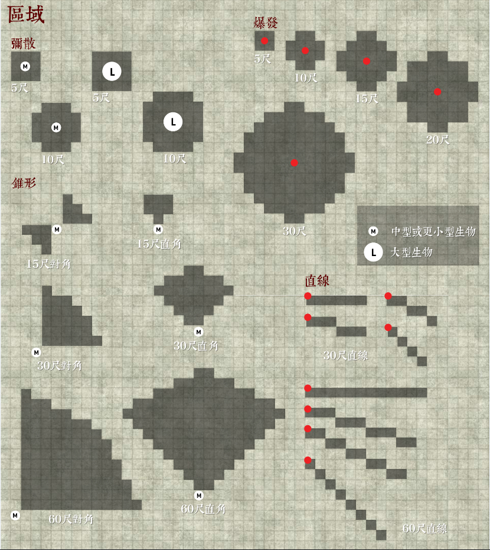

效果 Effects
你在游戏中做的所有事都有效果。许多结果在游戏中很容易判定。比如你告诉GM你要拔出长剑，这不需要检定，结果就是你的角色手持着长剑了。其它情况下，特定效果需要更多规则描述来决定如何处理你的选择。许多法术、魔法物品和专长能制造特定的效果，你的角色也会受到怪物、危害、环境和其它角色制造的效果影响。
虽然检定会决定一次效果的总体影响力或强度，但制造效果不一定需要检定。对自己施放飞行术制造了一个效果，该效果让你能飞到空中，这次施法就不需要检定。另一方面，使用威吓技能挫败士气需要简单，你的检定结果决定了效果的输出。
下面是让你理解和应用效果的通用规则。
持续时间 Duration
大多数效果是独立的，当你让 GM
理解进行了什么动作后，就会制造一个瞬时效果。射箭，移动，从包里拿东西，事件立刻就完成并结束了。而总有一些效果会持续一段固定的时间。只有持续时间过后，效果才会结束。下述为持续时间的通用规则，法术其特别的持续时间规则，需要见304-305页。
对于持续数轮的效果，每当制造效果的单位回合开始时，剩余持续时间会减少1。这对目标为自己和盟友的增益效果来说很常见。有害效果则通常是“直到目标下个回合结束”或“直到”数个回合之后（比如“直到目标三个回合后”），这代表在目标的每个回合结束时，效果持续时间减少1，而不是回合开始。
与持续确定轮数的效果不同，有的效果只有满足某些条件（或不再存在）时，其持续时间才会结束。此时，效果将持续到条件满足时。
射程和触及 Range and Reach
制造效果的动作或能力通常都有特定的射程或触及。大多数法术和能力也列有射程——从制造效果的生物或物体到效果发生地之间的最远距离。
远程和投掷武器具有射程增量。这些武器进行的攻击在射程内正常运作。超过射程的攻击受到-2减值，每多超过一次射程则额外减值会增加2点，最高达到5个额外射程增量后-10减值。更远的攻击则无法进行。例如，你使用短弓，对60尺内的目标攻击没有射程减值，60-120尺内的目标有-2减值，120-180尺内的目标有-4减值，以此类推，最远射程为360尺。
触及是你能用身体或武器物理接触到的距离。近战打击就基于触及。你的触及同时在你周围制造出一个区域，其他生物在该区域内会触发你的反应动作。你的触及通常为5尺，拥有长触及特征的武器可以延长它。大型及更大的生物有着更长的触及；例如，兽人的触及是10尺。和大多数常规距离计算不同，10尺触及意味着可以接触到斜向第二格。超过10尺的触及正常表现；20尺触及能接触到斜向第三格，25尺触及能接触到斜向第四格，以此类推。
目标 Targets
某些效果需要你指定目标。如果生物不符合你的目标限制、某些能力阻止你将其选为目标、生物对你而言为无踪状态，则选择其为目标十分困难和甚至不可能达成。
某些效果需要目标自愿。只有你可以决定自己的角色是否为自愿，GM决定NPC是否自愿。即便你或你的角色不知道效果是什么，比如角色失去意识，你也能决定是否自愿。
某些效果瞄准或需要一位盟友，或者指向一位盟友。这需要和你同一战线的单位，通常是其他
PC，也可以是你试图保护的旁观者。你不是你自己的盟友。若你不清楚谁是盟友，问GM决定谁能算作盟友，谁能算作敌人。
区域 Areas

某些效果发生在一个特定形状和大小的区域内。区域效果总会有一个起点，区域从起点向外散发。有四种区域类型：弥漫 emanations、爆发
burst、锥形 cone 和线形
line。当你进行遭遇模式并使用四角格战术地图时，区域计算和移动计算（463页）拥有相同的方式，但区域的距离不会因困难地形（457页）或次级掩蔽（476页）而减少或受影响。你可以直接用下面的区域图作为区域表征图，而不用每次都重新量格子。许多区域效果描述只对区域内的生物有影响。GM可以决定区域效果是否对环境和无关物品有影响。
爆发 Burst
爆发效果以某方格的一个角为中心向所有方向出发，扩散到指定的半径停止。例如，使用火球术，会以500尺内一个方格的一个角为中心，制造出半径20尺的爆发效果，这意味着它从该角起始向向外扩散20尺，影响区域内所有生物（包括只有一个方格处于效果区域内的生物）。
锥形 Cone
以你所在方格出发，发射出一个四分之一圆的锥形区域。以锥形瞄准时，若为直角锥形，第一格必须和你所在格有一个共边，若为对角锥形，第一格必须和你所在格有一个共角。若你为大体型或更大，你的锥形判定格可为你所在方格的任一格。锥形区域格不能和你所在格重叠。锥形向外扩展一定尺数，并不断变宽，具体扩展见区域图。举个例子，绿龙使用龙息能力时，毒气以其所在一格的一个边出发，喷出四分之一个圆的30尺直角锥形区域。
若你以其它起点格制造锥形区域，遵循同样的规则，锥形第一格必须和制造锥形的生物或物体所在格共边或共角。
弥漫 Emanation
弥漫效果为从你所在格所有边扩散开，向所有方向延伸一定英尺距离。例如，祝福术为弥漫5尺或更多，以施法者为起点。因目标所在格的每个边回被用作弥漫的起点，大型或更大生物的弥漫效果能比中型或更小生物的弥漫效果有着更大的复盖区域。
线形 Line
线形为由你自选复盖一条直线的区域。线形效果影响所复盖区域上的所有生物。除非线形效果特别说明，否则为5尺宽。例如，闪电箭法术区域为60尺线形，5尺宽。
效果线 Line of Effect
制造效果时，通常需要你和法术目标、区域效果起点、你制造效果的地方之间有一条无障碍的路径。这个路径被称之为效果线。除非生物完全处于固体障碍后，否则你都会拥有效果线。视野不会影响效果线，镂空铁闸门等并非完整的固体障碍物也不会影响。若你无法确定某障碍物是否足够完整阻碍，通常一个一尺见方的孔洞即能保证效果线连通，当然GM拥有最终解释权。
对于区域效果，生物或目标必须和效果起始点有效果线连接才能被影响。若区域起始点和目标之间没有效果线，该效果则不会影响到该目标。举个例子，火球术起始点和处于爆发范围内的目标之间若有一堵墙，墙壁会挡住效果
—— 该生物不受该火球术影响也无需进行豁免检定。意思类推，任何能力制造的区域持续效果不再对移出效果线的单位有效。
视线 Line of Sight
某些效果需要你和目标之间有视线。只要你能精确看到目标区域（见464页的察觉部分），且中间没有完整固体障碍（见476-477页掩蔽部分），你就有视线。黑暗区域会阻挡不具有黑暗视觉生物的视线，但镂空铁闸门等并非完整固体的障碍物不会阻挡视线。若你无法确定某障碍物是否足够完整阻碍视线，通常一个一尺见方的孔洞即能保证视线连通，当然GM拥有最终解释权。